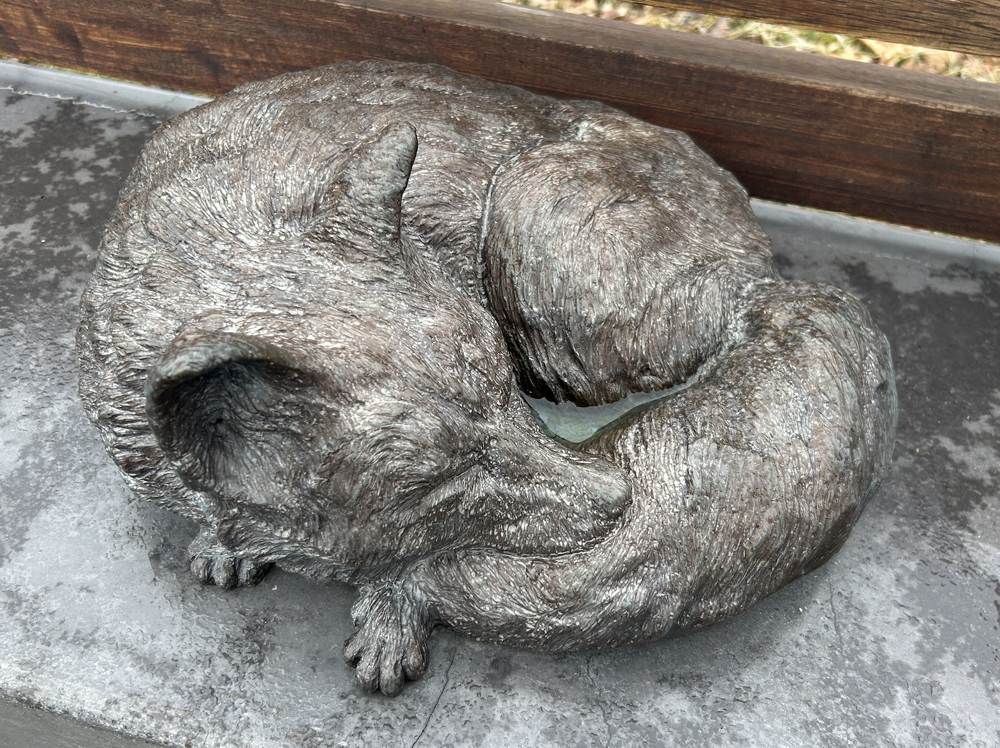

At first glance, the animals in A State of Rest invite affection. The gentle foal, the serene fox, and the small, curled squirrel evoke responses often associated with cuteness: warmth, charm, and harmlessness. Their lifelike proportions and peaceful poses draw people in, encouraging interaction and even delight. But this very appeal raises a crucial question: does cuteness make us overlook the deeper message?
Aesthetic attraction can sometimes mask conceptual urgency. These sculptures are not merely decorative... they are part of a broader critique of urban development, ecological displacement, and human dominance over the natural world. Yet their visual softness may cause viewers to read the work as comforting rather than challenging. The animals’ beauty disarms us, making the sculptures approachable, but potentially diminishing their critical impact.

Further Reflection
Are these animals welcomed into public space because they are cute and culturally valued? What if they were less endearing—snakes, rats, insects, or vultures? Would we still pause? Would we still feel moved to sit beside them?
In this way, A State of Rest quietly interrogates how visual culture assigns value—and how “acceptable” versions of nature are often the ones that look best in our parks, plazas, and Instagram feeds.